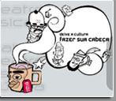

Destaques - 10° Festival Cultura Inglesa

Está acontecendo em São Paulo - SP e ficará até o dia 6 de junho, o 10° Festival Cultura Inglesa, que reúne atrativos de todos tipos e gostos, como teatro, dança, teatro infantil, música, cinema, artes visuais e vários outros. O ingresso é apenas um livro usado, que serão doados para as escolas públicas da Zona Norte.
Mais informações no site: http://www.culturainglesasp.com.br/festival/
Confira a programação:
-
Música
Dia: 02/06
Evento: bandas Fren_Z, Müvi e os Beat Brother
Horário: 16h
Endereço: Centro Brasileiro Britânico, Rua Ferreira de Araújo, 741 - Pinheiros - Telefone: (11) 3814 4155
Dia: 06/06
Evento: Apresentação final das bandas Fren_Z, Müvi e os Beat Brother.
Horário: 19hs
Endereço: Centro Brasileiro Britânico, Rua Ferreira de Araújo, 741 - Pinheiros - Telefone: (11) 3814 4155
-
Teatro Adulto
Dia: 25/05 a 28/05
Evento: Drácula
Horário: quin à sab. 21h e dom às 19h
Endereço: Centro Brasileiro Britânico, Rua Ferreira de Araújo, 741 - Pinheiros - Telefone: (11) 3814 4155
Dia: 11/05 a 14/05
Evento: Blackbird
Horário: quin à sab. 21h e dom às 19h
Endereço: Centro Brasileiro Britânico, Rua Ferreira de Araújo, 741 - Pinheiros - Telefone: (11) 3814 4155
Dia: 18/05 a 21/05
Evento: Road Movie
Horário: quin à sab. 21h e dom às 19h
Endereço: Centro Brasileiro Britânico, Rua Ferreira de Araújo, 741 - Pinheiros - Telefone: (11) 3814 4155
-
Teatro Infantil
Dia: 13/05 a 21/05
Evento: As Aventuras de Alice no País das Maravilhas
Horário: 16h
Endereço: Auditório Cultura Inglesa . Higienópolis
Av. Higienópolis, 449 . telefax: (11) 3826 4322
Dia: 20/05 e 21/05
Evento: Galinhas Aéreas
Horário: 16h
Endereço: Centro Brasileiro Britânico, Rua Ferreira de Araújo, 741 - Pinheiros - Telefone: (11) 3814 4155
Dia: 27/05 a 04/06
Evento: Cadarço Laranja
Horário: 16h
Endereço: Auditório Cultura Inglesa - Higienópolis
Av. Higienópolis, 449 - Telefax: (11) 3826 4322
-
Cinema
Dia: 10/05 a 05/06
Evento: Exibição dos curtas-metragens Tyger, Alguma Coisa Assim e Na Linha do Trem
Horário: Segunda a quinta às 19h30
Endereço: Teatro Cultura Inglesa - Pinheiros
Rua Dep. Lacerda Franco, 333 - Telefone (11) 3814 0100
Auditório Cultura Inglesa - Higienópolis
Av. Higienópolis, 449 - Telefax: (11) 3826 4322
Centro Brasileiro Britânico
Rua Ferreira de Araújo, 741 - Pinheiros - Telefone (11) 3814 4155
Espaço Cultura Inglesa - Santana
Rua Duarte Azevedo, 550 - Telefone (11) 6976 8699
Espaço Cultura Inglesa . Campinas
Rua Dr. Antonio da Costa Carvalho, 480 - Telefone (19) 3255 8656
Espaço Cultura Inglesa . Santos
Av. Coselheiro Nébias, 569 - Telefone (13) 3224 6555
Basílica do Mosteiro de São Bento
Largo de São Bento, Centro - Telefone (11) 228 3633
Igreja Beato Padre Anchieta
Praça do Pátio do Colégio, 84, Centro
Dia: 06/06
Evento: Exibição dos curtas-metragens Tyger, Alguma Coisa Assim e Na Linha do Trem
Horário: às 18h, 19h, 20h, 21h e 22h
Endereço: Sala Cultura Inglesa do CBB - Centro Brasileiro Britânico
Rua Ferreira de Araújo, 741 . Pinheiros - Telefone (11) 3814 4155
-
Dança
Dia: 19/05 a 21/05
Evento: A Pé
Horário: Sex às 16h e 21h sab às 21h e dom às 19h
Endereço: Sala Cultura Inglesa do CBB - Centro Brasileiro Britânico
Rua Ferreira de Araújo, 741 - Pinheiros - Telefone (11) 3814 4155
Dia: 26/05 a 28/05
Evento: Relevo
Horário: Sex às 21h sab às 16h e 21h e dom às 19h
Endereço: Sala Cultura Inglesa do CBB - Centro Brasileiro Britânico
Rua Ferreira de Araújo, 741 - Pinheiros - Telefone (11) 3814 4155
Dia: 12/05 a 14/05
Evento: Nós, Elas e Eu
Horário: Sex às 21h sab às 16h e 21h e dom às 19h
Endereço: Sala Cultura Inglesa do CBB - Centro Brasileiro Britânico
Rua Ferreira de Araújo, 741 - Pinheiros - Telefone (11) 3814 4155
Obs.: Alunos, funcionários, membros da Cultura Inglesa e estudantes têm 50% de desconto em todos os eventos.
Informações sobre os eventos no Departamento Cultural Telefone: (11) 3814-4155 (2a. a 6a., horário comercial)